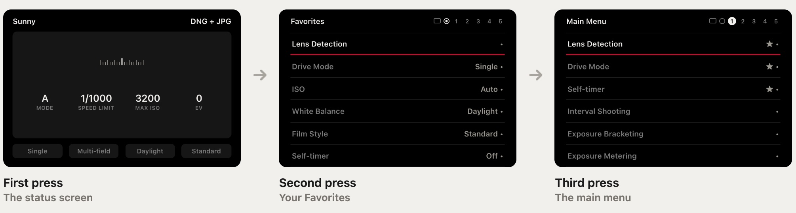
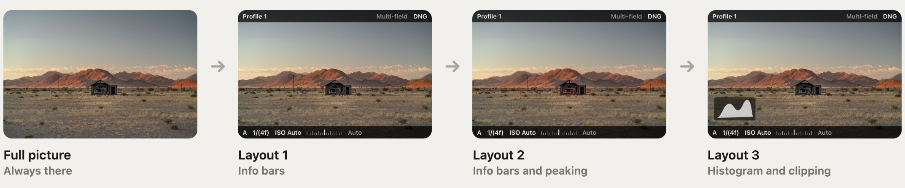
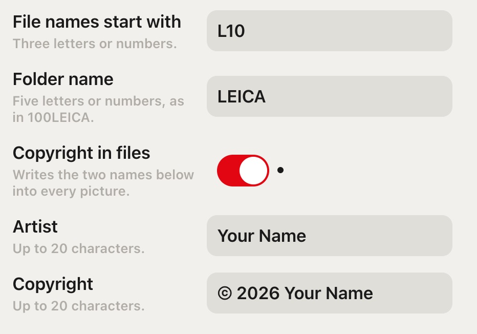

Msetter
Msetter is a free app for setting up a Leica M from a computer or phone instead of the camera’s menus. Choose what each button does, put your Favorites and screen layouts in order, type your copyright and file names on a real keyboard, and design your user profiles side by side. It saves one settings file for each of your cameras, and the camera loads it from its card in one step. Everything stays in your browser: files you open and settings you make never leave your computer or phone, and I never see them. Works on the M11, M11-P, M11 Monochrom and M-EV1.

Why
Typing on a camera is painful. Copyright, file names and profile names are spelled out one letter at a time with the arrow pad.
Menus are deep and small. Every setting sits a few levels down a menu built for a three-inch screen. A new camera takes hours to set up.
You keep starting from scratch. After a reset, a repair or a firmware update, on a new body, and on a camera you borrow or rent, your setup is gone unless you remember it. Lend yours out and it may come back changed.
The Leica FOTOS app doesn’t fix it. It changes some settings from your phone, one at a time, with little way to organise your buttons, Favorites or user profiles.
Two cameras drift apart. An M11-P and an M-EV1 have slightly different menus. Keeping them alike means going through every menu on both.
Profiles multiply the work. A change you want everywhere has to be made in every user profile, one at a time.
What it does
Buttons. Choose what the top button, FN, the thumbwheel and the M-EV1’s lever do. Click a red button on the drawing and pick its job from a short list, grouped by what it does.

Favorites. The Menu button shows the status screen, then your Favorites, then the main menu. Choose up to eleven items for your Favorites and drag them into order.

Screen layouts. The centre button steps through four layouts. Choose what each one shows: info bars, grid, histogram, horizon, clipping or focus peaking.

Every menu setting. Type the artist, copyright and file names on a real keyboard. White balance, film styles, power saving and the rest each have a plain name and one line on what it does.

User profiles. Each user profile is a column, so you can compare them at a glance. A setting that is the same in every profile shows once: change it and all of them change. With the shutter speed and ISO dials on A, a profile can’t set the shutter speed or ISO; it sets limits instead, how slow the shutter may go before ISO rises and how high ISO may go. Once ISO reaches its maximum, the shutter goes slower than the limit. Starting sets give you a head start, such as this speed ladder.

One file for each camera. Design once for every body you own. A value one body doesn’t have is swapped for the nearest one it does, and the app lists every swap.
Nothing leaves your browser. No server, no account, no tracking. A file you open is read by your browser, not uploaded, and I never see anything you open or make. The Mac app works the same way and writes the file straight to the card.
How to use it
- Pick your cameras. Msetter makes a separate file for each, so two bodies can share one design even where their menus differ.
- Start from your camera or a set. To start from your camera, export its settings to the card (User Profile › Manage Profiles › Export Profiles) and open the file in the app.
- Change what you like. Settings are grouped by what they are for. Point at a setting to see what it does. Undo takes back anything.
- Save and import. Copy
settings.lcseto the top of the card, then User Profile › Manage Profiles › Import Profiles. Export your own settings first if you want a way back.
The camera doesn’t say when it skips a value, so check a few settings after your first import.